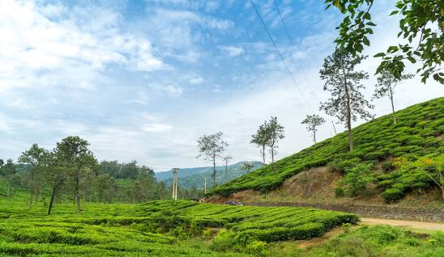

Wayanad is a district in the north-east of the Indian state of Kerala, with administrative headquarters at the municipality of Kalpetta. It is the only plateau in Kerala.[7] The Wayanad Plateau forms a continuation of the Mysore Plateau, the southern portion of Deccan Plateau which links the Western Ghats with the Eastern Ghats. It is set high in the Western Ghats with altitudes ranging from 700 to 2100 meters.
